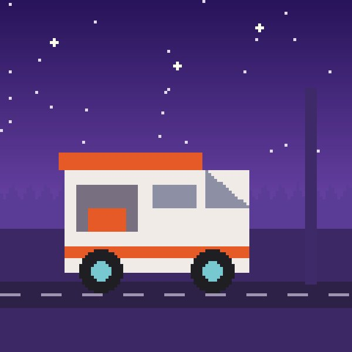

Фритрек и нулевой спринт: Подготовка к работе

Это было самое начало пути. На этом этапе важно было проникнуться основами и настроиться на учёбу. И, возможно, подумать, как новые знания могут повлиять на ваше будущее.
Я пришёл на курс параллельно с первым курсом вуза: хотелось понять, как сайты устроены изнутри. Первые уроки шли легко, и казалось, что дальше всё будет так же просто.